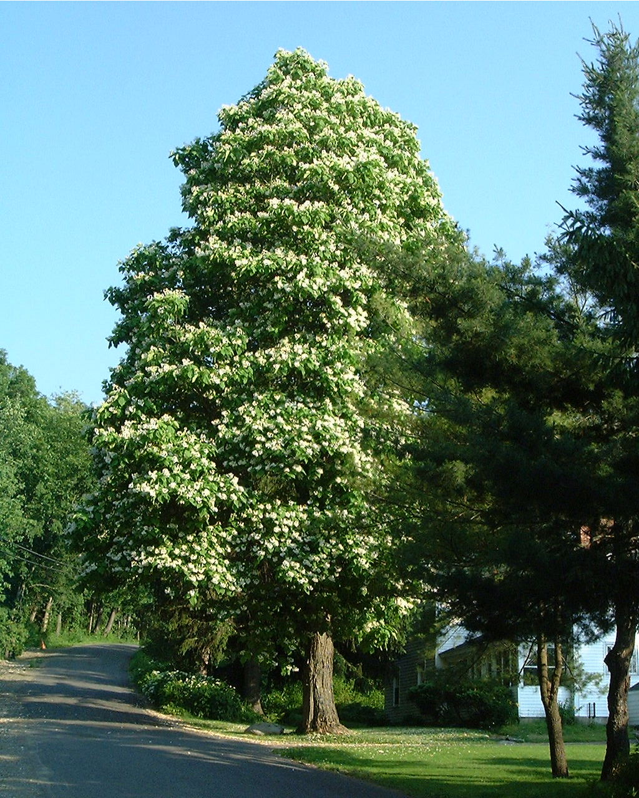

This is a Buckeye Tree (aka Horse Chestnut) at the foot of Mount
Lebanon on Shaker Road. It's a 1024x1280 image scaled down by the html
to 512x640. Click on the image for the full size picture (which
doesn't fit on many people's screens). Photo taken on 27 June, 2001.
